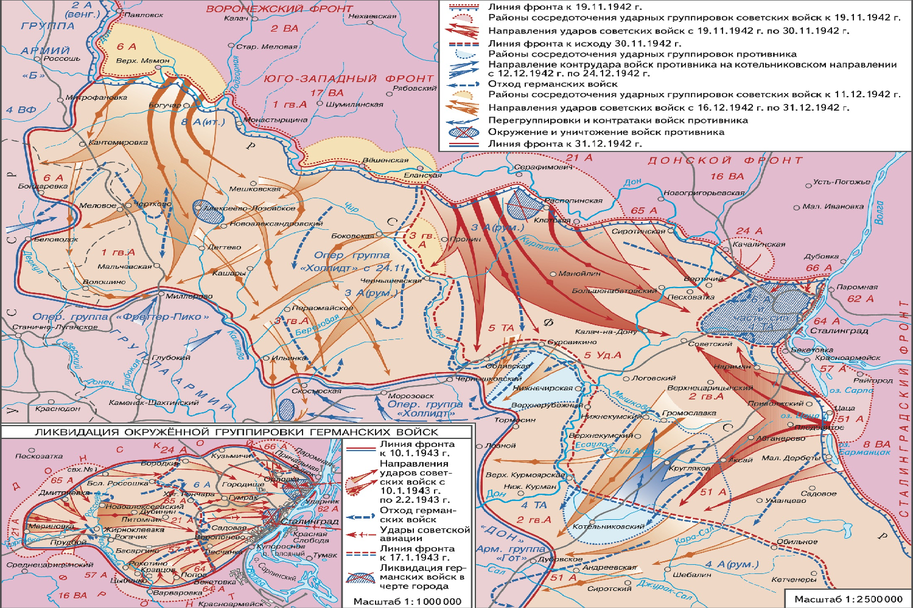
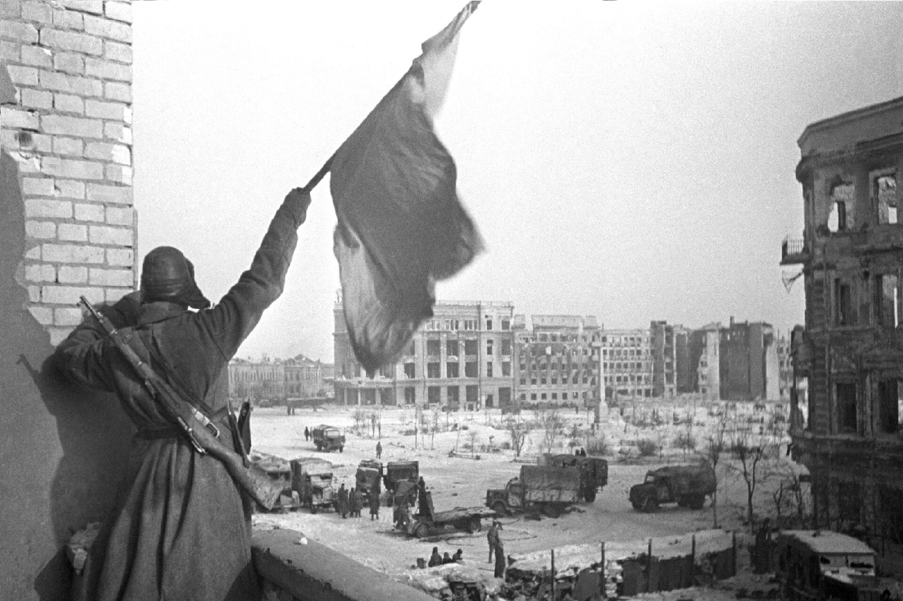
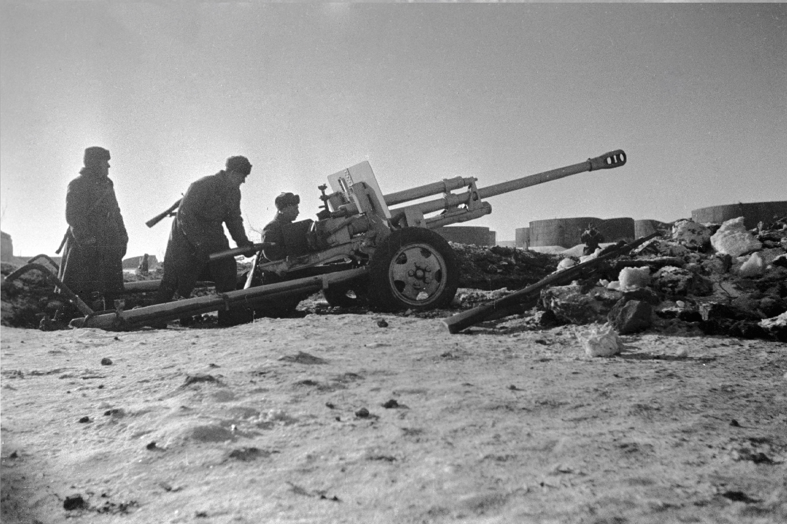

1942
|  |
ПодробннеВ начале операции немецкие войска, под командованием фельдмаршала Фридриха Паулюса, стремились захватить Сталинград, важный промышленный и транспортный узел на Волге. Гитлер рассматривал этот город как стратегически важный пункт для дальнейшего продвижения в глубь Советского Союза. Наступление начиналось с интенсивных бомбардировок, в результате которых город был частично разрушен, а его население сильно пострадало.Советское командование, осознавая важность Сталинграда, организовало оборонительные усилия под руководством генерала Василия Чуйкова и других командиров. Город стал ареной жестоких уличных боев, где сражались не только регулярные войска, но и партизаны, и гражданское население. Ситуация усиливалась нехваткой продовольствия, боеприпасов и топлива, но советские солдаты проявляли невероятное мужество, отражая атаки противника.К концу 1942 года советское командование разработало операцию «Уран», цель которой заключалась в окружении немецких войск под Сталинградом. В конце ноября 1942 года началось контрнаступление, и в результате окружения 6-й армии Паулюса советские войска завладели стратегической инициативой. Окруженные немецкие войска страдали от нехватки ресурсов, и их попытки прорыва оказались безуспешными |
|
2 февраля 1943 года остатки немецкой армии капитулировали. Это событие стало поворотным моментом на Восточном фронте и положило начало серии советских наступлений, которые привели к освобождению огромных территорий и окончательной победе над нацистской Германией в 1945 году. |
 |
|  | Сражение под Сталинградом унесло миллионы жизней и стало символом героизма и сопротивления. Оно продемонстрировало возможности советской армии и изменило ход войны. Сталинград стал не только географической, но и моральной точкой отсчета, после которой советские войска начали уверенно продвигаться на запад, освобождая оккупированные земли. |